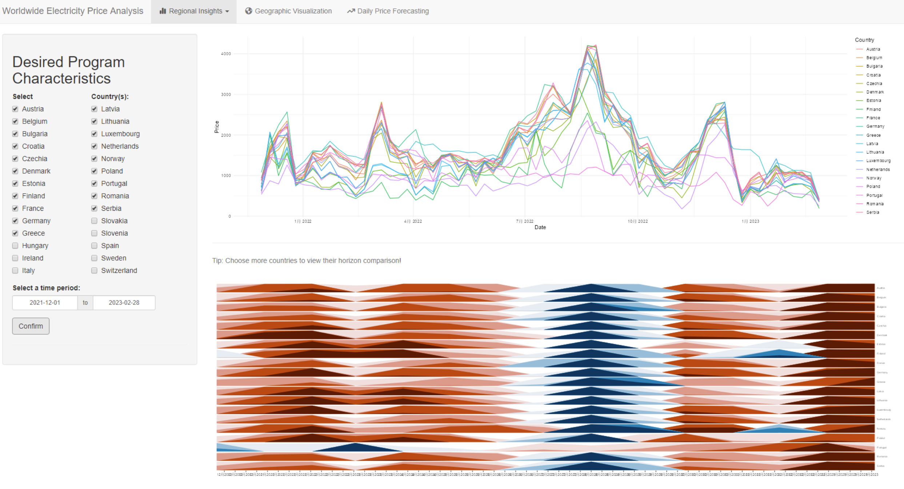
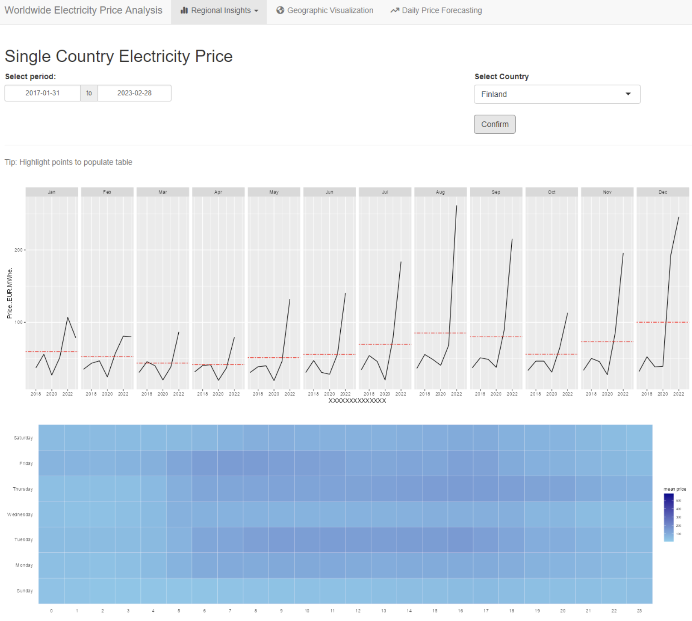
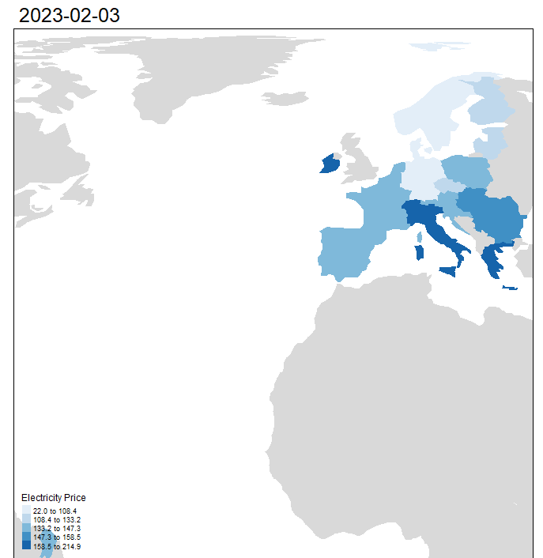
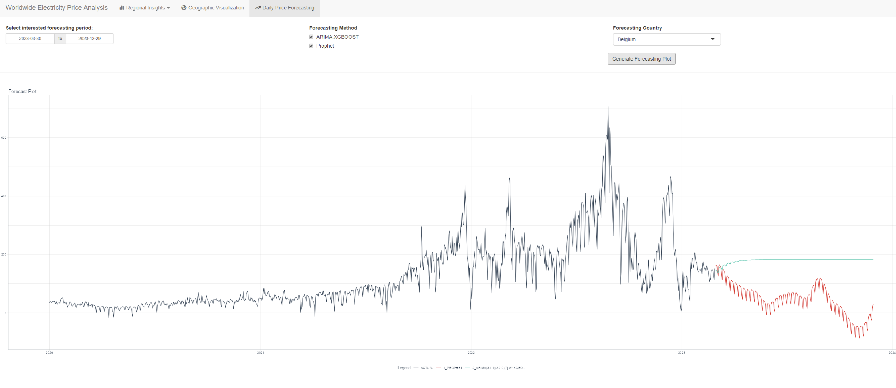

Overview
Motivation
The motivation behind this project is to gain insights into the European wholesale electricity market and to understand the impact of the ongoing conflict between Russia and Ukraine on electricity prices. The European electricity market is critical to the region’s economy, and wholesale electricity prices can significantly affect businesses, consumers, and governments.
The ongoing conflict between Russia and Ukraine has led to significant disruptions in energy supplies and has caused price spikes and volatility in the European wholesale electricity market. It has also highlighted the importance of diversifying energy sources and reducing dependence on a small number of suppliers.
By analyzing the impact of the conflict on electricity prices in Europe and conducting time series forecasting of wholesale electricity prices for all European countries, this project aims to provide valuable insights into future trends and help businesses and consumers make informed decisions about their energy usage and investments. The results of this analysis and forecasting will also interest policymakers and industry experts tasked with ensuring the stability and sustainability of the European energy market.
Dataset
We will use the European wholesale electricity price data dataset for this project, which contains three columns: country, timestamp, and electricity price. The dataset covers hourly, daily, and monthly electricity prices for all European countries.
Objectives
Analyze the impact of the war between Russia and Ukraine on electricity prices in Europe.
Conduct time series forecasting of electricity prices for all European countries.
Create visualizations that help us understand the variation in electricity prices across different countries, seasons, and time periods.
Proposed Visualization
Regional Insights


Line chart
The line chart was used to visualize the price trend of selected countries over the period of Jan 2015 to Jan 2023. This method provided a clear picture of how electricity prices have evolved over time in different countries. By selecting a subset of countries for comparison, businesses and analysts can better understand the differences in electricity pricing across Europe, as well as the impact of specific events, policies, or other factors on prices.
Heat Map
The heat map was used to show the relationship between different days in a week and different hours in a day. This method is useful for understanding the patterns and trends in electricity consumption over time. By analyzing the heat map, businesses and analysts can identify peak and off-peak periods of electricity consumption, which can inform decisions about pricing, capacity planning, and energy efficiency initiatives.
Price Comparison
The price comparison method was used to compare the prices for the same month across different years. This method provides a useful way to understand how electricity prices have changed over time and to identify patterns or trends in price movements. By comparing prices across different years, businesses and analysts can identify factors that have contributed to price changes, such as changes in the energy mix, shifts in demand patterns, or other external factors. This information can inform pricing strategies and energy procurement decisions.
Geographic Visualisation

The geographic visualisation analysis used country location and price to create an interactive and dynamic visualization of electricity prices in Europe. The method involved using a colour-coded map of Europe, with each country’s price represented by a different colour or shade. The intensity of the colour or shade represented the depth of the price, with darker colours indicating higher prices.
The visualisation was presented in GIF format, which allowed the audience to view the price change smoothly over time. This provided a useful way to understand the fluctuations and trends in electricity prices across Europe. By visualizing the price changes in this way, businesses and analysts could quickly identify areas of high or low pricing, as well as the factors that contributed to price movements.
Time Series Forecast

The Prohect and ARIMA models were used to forecast the electricity prices in Europe for a user-entered number of days. This method involved analyzing historical price data, identifying trends and patterns, and then using these insights to generate forecasts for future prices.
The results of the analysis were visualized using a line chart, which provided a clear and concise representation of the forecasted prices over time. By adjusting the number of days input by the user, businesses and analysts could generate forecasts for different time horizons, allowing for more informed decision-making and planning.